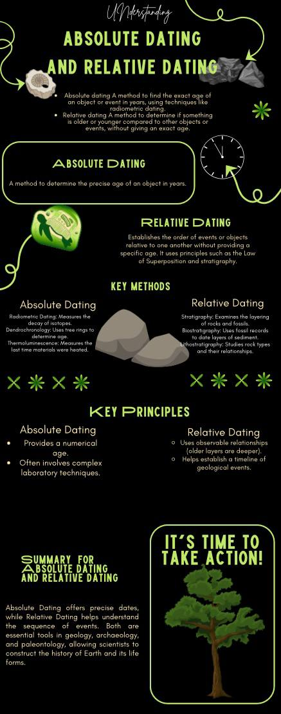
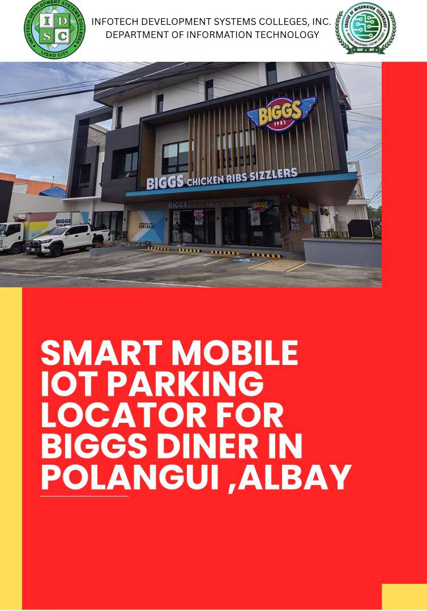

Portfolio
I craft compelling visual stories, memorable brand identities, and eye-catching digital experiences that help businesses connect with their audience.
Event Invitation Layout
An invitation card design for the 2026 PINASAYAW event for DepEd Region 5.

Educational Infographic
An informative and visually structured infographic explaining geological dating methods.
Corporate Chart Design
A clean, professional organizational chart designed for the DepEd Region V Bicol Office.
Certificate Layout Design
A formal certificate layout created for an Information Technology seminar at Infotech Development Systems Colleges.

Project Poster Design
A bold, modern cover design for an IoT parking locator project at Biggs Diner in Polangui, Albay.
Hello! I'm Anne Grace Malagueño, a graphic designer with a deep passion for transforming complex ideas into beautiful, intuitive, and effective visual communications.
My expertise lies in brand identity, digital marketing assets, typography, and illustration. I believe that good design is not just about making things look pretty—it's about problem-solving and delivering a clear message that resonates with the target audience.
Currently open for new freelance opportunities, creative collaborations, and full-time roles.
Say Hello 👋